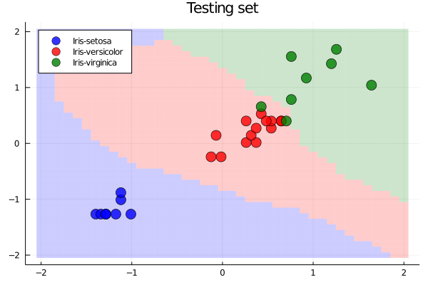
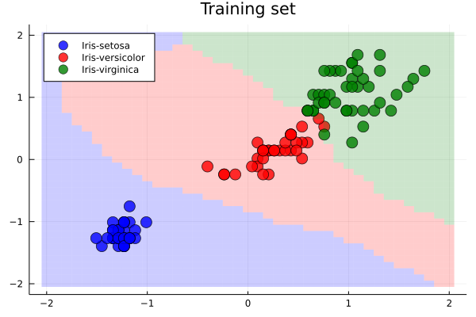
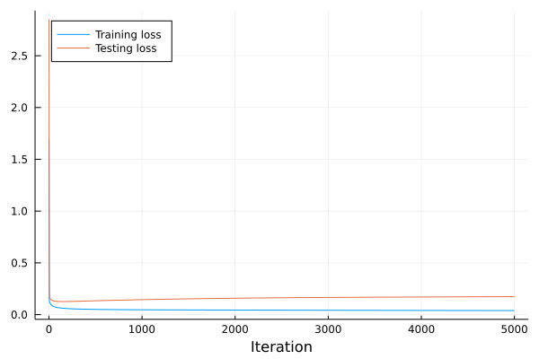

Exercises
Perform an analysis of hyperparameters of the neural network from this lecture. Examples may include network architecture, learning rate (stepsize), activation functions or normalization.
Write a short summary (in LaTeX) of your suggestions.
Proof the theorem about universal approximation of neural networks.
Solution:
Since piecewise linear functions are dense in the set of continuous functions, there is a piecewise linear function $h$ such that $\|h-g\|_{\infty}\le \varepsilon$. Assume that $h$ has kinks at $x_1<\dots<x_n$ with function values $h(x_i)=y_i$ for $i=1,\dots,n$. Defining
\[d_i = \frac{y_{i+1}-y_i}{x_{i+1}-x_i},\]
then $h$ has the form
\[h(x) = y_i + d_i(x-x_i) \qquad\text{ for }x\in [x_i,x_{i+1}].\]
It is not difficult to show that
\[h(x) = y_1 + \sum_{i=1}^n(d_i-d_{i-1})\operatorname{max}\{x-x_i,0\},\]
where we defined $d_0=0$.
Then $h$ can be represented as the following network with two layers:
- Dense layer with $n$ hidden neurons and ReLU activation function. Neuron $i$ has weight $1$ and bias $-x_i$.
- Dense layer with $1$ ouput neurons and identity activation function. Connection $i$ has weight $d_i-d_{i-1}$ and the joint bias is $y_1$.
This finishes the proof.
Keyword arguments (often denoted as kwargs... but any name may be used) specify additional arguments which do not need to be used when the function is called. We recall the prepare_data function written earlier.
function prepare_data(X, y; do_normal=true, kwargs...)
X_train, y_train, X_test, y_test = split(X, y; kwargs...)
if do_normal
X_train, X_test = normalize(X_train, X_test)
end
X_train = Matrix(X_train')
X_test = Matrix(X_test')
classes = unique(y)
y_train = onehot(y_train, classes)
y_test = onehot(y_test, classes)
return X_train, y_train, X_test, y_test, classes
endAll keyword arguments kwargs will be passed to the split function. They could also be passed to normalize or any other function. The benefit is that we do not need to specify the keyword arguments for split in prepare_data.
Recall that split takes ratio_split as an optional argument. Write an one-line function ratio_train which gets the training and testing sets and computes the ratio of samples in the training set. Then call the prepare_data with:
- no normalization and default split ratio;
- normalization and split ratio of 50/50;
- no normalization and split ratio of 50/50.
Solution:
The ratio_train function reads
ratio_train(X_train, X_test) = size(X_train, 2) / (size(X_train,2) + size(X_test,2))For the first call, we want to use the default ratio, hence we do not pass ratio_split. Since we do not want to use normalization, we need to pass do_normal=false.
X_train, y_train, X_test, y_test, classes = prepare_data(X, y; do_normal=false)
println("Ratio train/test = " * string(ratio_train(X_train, X_test)))Ratio train/test = 0.8
For the second call, it is the other way round. We use the default normalization, thus we do not need to specify do_normal=true (even though it may be a good idea to do so). We need to pass ratio_train=0.5.
X_train, y_train, X_test, y_test, classes = prepare_data(X, y; ratio_train=0.5)
println("Ratio train/test = " * string(ratio_train(X_train, X_test)))Ratio train/test = 0.5
For the final call, we need to use both arguments. Note that do_normal is passed as an optional argument and therefore, its default value will be overwritten while ratio_train is passed in kwargs and goes into the split function.
X_train, y_train, X_test, y_test, classes = prepare_data(X, y; do_normal=false, ratio_train=0.5)
println("Ratio train/test = " * string(ratio_train(X_train, X_test)))Ratio train/test = 0.5
The goal of this exercise will be to show the separation graphically. For this reason, we need to consider only two features. The description may be a bit unclear. If you are uncertain, check the correct answer and try to reproduce the graph.
First, use the same data and the same training procedure as during lecture with the exception that we will consider only the last two features of $X$. Train the network with five hidden neurons.
Second, write a function rectangles(x, y, r) where x and y are vectors of the same size and r is a positive number. It should return two outputs of size (5,n) where n is length of x and y. Column i of the outputs forms the edges of the rectangle with center (x[i],y[i]) and length 2r. The first and second outputs correspond to $x$ and $y$ coordinates, respectively. For plotting, the outputs need to have five edges (instead of four), where the first and the last one are the same.
Thirs, create a uniform discretization of $[-2,2]\times [-2,2]$ with grid $0.1$ and convert it into rectangles using the rectangle function. Assign one of three colours (blue, red, green) to each rectangle based on the prediction of its center. Plot all rectangle using the corresponding colour. Use fill=(0,0.2,???), where ??? is the colour. Finally, using the scatter plot, show the testing data in the same colours.
Solution:
The procedure for training the network is the same as during the lecture
X_train, y_train, X_test, y_test, classes = prepare_data(X[:,3:4], y)
W1, b1, W2, b2 = initialize(size(X_train,1), 5, size(y_train,1))
α = 1e-1
max_iter = 1000
for iter in 1:max_iter
grad_all = [grad(X_train[:,k], y_train[:,k], W1, b1, W2, b2) for k in 1:size(X_train,2)]
grad_mean = mean_tuple(grad_all)
W1 .-= α*grad_mean[2]
b1 .-= α*grad_mean[3]
W2 .-= α*grad_mean[4]
b2 .-= α*grad_mean[5]
endFor the rectangles function, we first create realize that if a rectangle is centered at zero, its x and y coordinates are [-r; r; r; -r; -r] and [-r; -r; r; r; -r], respectively. Then we reshape the input x vector into a row vector and move the rectangle derived above into the proper center. Note that the implementation adds a column vector reshape(x, 1, :) and a row vector [-r; r; r; -r; -r]. The result is a matrix with an appropriate dimension.
function rectangles(x::AbstractVector, y::AbstractVector, r::Number)
xs = reshape(x, 1, :) .+ [-r; r; r; -r; -r]
ys = reshape(y, 1, :) .+ [-r; -r; r; r; -r]
return xs, ys
endTo create the discretization, we first discretize the $x$ axis via x = collect(-2:x_diff:2). To get the grid, we then create all combinations of $x$ with $x$. To have a proper dimension for the neural network, it should be dimension (1,n^2). Finally, we evaluate all these points via the model m and convert the one-hot into the one-cold representation.
x_diff = 0.1
x = collect(-2:x_diff:2)
n = length(x)
xy = hcat(repeat(x, n, 1), repeat(x', n, 1)[:])'
z = m(xy, W1, b1, W2, b2)
z = onecold(z, classes)Finally, for plotting, we first define the three colours as three symbols. Then we create a loop over all three classes. In the first plot, we need to call plot while in the remaining ones, we call plot!. For each predicted class, we find the indices with the predicted class z.==classes[i] and plot the corresponding rectangles. Besides the fill parameter, we specify the line as well via line. For the prediction on the testing set, we repeat the same procedure. This time the indices are found by onecold(y_test, classes) .== classes[i] and we use the scatter plot. We specify the marker for a better visualization.
using Plots
colours = (:blue, :red, :green)
for i in 1:length(classes)
i == 1 ? p = plot : p = plot!
ii1 = z .== classes[i]
ii2 = onecold(y_test, classes) .== classes[i]
p(rectangles(xy[1,ii1], xy[2,ii1], x_diff/2)..., line=(0, 0.2, colours[i]), fill=(0, 0.2, colours[i]), label="")
scatter!(X_test[1,ii2][:], X_test[2,ii2][:], marker=(8, 0.8, colours[i]), label=y_name[classes[i]], legend=:topleft)
end
This exercise will show the well-known effect of overfitting. Since the model sees only the testing set, it may happen that it fits it too perfectly (overfits it) and generalizes poorly to unseen examples (testing set).
As in the previous exercise, consider only the last two features and train the network with 50 hidden neurons for 5000 iterations. Plot the evolution of the objective (loss) function on the training and testing sets.
Make two countour plots as in the previous exercise. The first one depicts the scatter plot for the testing set while the second one depicts it for the training set. Describe what went wrong.
Solution:
The first part of the exercise is the same as before. The only change is that we need to save the training and testing objective. Note that the training loss could be extracted from grad_all.
X_train, y_train, X_test, y_test, classes = prepare_data(X[:,3:4], y)
W1, b1, W2, b2 = initialize(size(X_train,1), 50, size(y_train,1))
α = 1e-1
max_iter = 5000
L_train = zeros(max_iter)
L_test = zeros(max_iter)
for iter in 1:max_iter
grad_all = [grad(X_train[:,k], y_train[:,k], W1, b1, W2, b2) for k in 1:size(X_train,2)]
grad_mean = mean_tuple(grad_all)
W1 .-= α*grad_mean[2]
b1 .-= α*grad_mean[3]
W2 .-= α*grad_mean[4]
b2 .-= α*grad_mean[5]
L_train[iter] = mean(loss(m(X_train, W1, b1, W2, b2), y_train)[:])
L_test[iter] = mean(loss(m(X_test, W1, b1, W2, b2), y_test)[:])
endThen we plot it. We ignore the first nine iterations.
plot(L_train[10:end], xlabel="Iteration", label="Training loss", legend=:topleft)
plot!(L_test[10:end], label="Testing loss")
We see the classical procedure of overfitting. While the loss function on the training set decreases steadily, on the testing set, it decreases first and after approximately 100 iterations, it starts increasing. This behaviour may be prevented by several techniques which we discuss in the next lecture.
We create the contour plot in the same way as in the previous exercise.
z = m(xy, W1, b1, W2, b2)
z = onecold(z, classes)
for i in 1:length(classes)
i == 1 ? p = plot : p = plot!
ii1 = z .== classes[i]
ii2 = onecold(y_test, classes) .== classes[i]
p(rectangles(xy[1,ii1], xy[2,ii1], x_diff/2)..., line=(0, 0.2, colours[i]), fill=(0, 0.2, colours[i]), label="", title="Testing set")
scatter!(X_test[1,ii2][:], X_test[2,ii2][:], marker=(8, 0.8, colours[i]), label=y_name[classes[i]], legend=:topleft)
end
for i in 1:length(classes)
i == 1 ? p = plot : p = plot!
ii1 = z .== classes[i]
ii2 = onecold(y_train, classes) .== classes[i]
p(rectangles(xy[1,ii1], xy[2,ii1], x_diff/2)..., line=(0, 0.2, colours[i]), fill=(0, 0.2, colours[i]), label="", title="Training set")
scatter!(X_train[1,ii2][:], X_train[2,ii2][:], marker=(8, 0.8, colours[i]), label=y_name[classes[i]], legend=:topleft)
end

We see that the separation on the testing set is very good but it could be better for the two bottommost green circles (iris virginica). The model predicted (in background) the red color (iris versicolor) there. This is wrong. The reason is clear from the picture depicting the training set. The classifier tried to fit perfectly the boundary between the green and red points, making a outward-pointing tip there from otherwise a rather flat boundary. This is precisely overfitting and the reason of the misclassification on the testing set.

Compare the contour plots from Exercises 2 and 3. They are strikingly different, especially in the top-left and bottom-right corners. Why is that?
Solution:
Since the dataset does not contain any data in the top-left or bottom-right corners, it does not know what to put there. From its perspective, both separations are very good. This raises an important take-away message.
If a classifier does not have any data in some region, it may predict anything there. Including predictions with no sense.